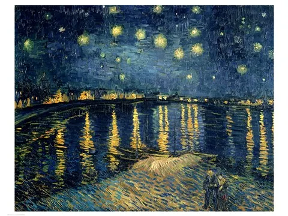

Starry Night Over The Rhone
Created: 1888
Painted the same year as his more famous Starry Night, this version shows the night sky reflected over the Rhône river in Arles, where Van Gogh had moved hoping to start an artists' colony. He wrote to his brother Theo that he was fascinated by painting stars at night directly from life rather than imagination, setting up his easel by the riverbank after dark. The gas lamps of the town glow along the water in the painting, a rare moment of calm domestic life in a period of his career defined by turmoil.
Type: Post‑Impressionist Landscape Painting